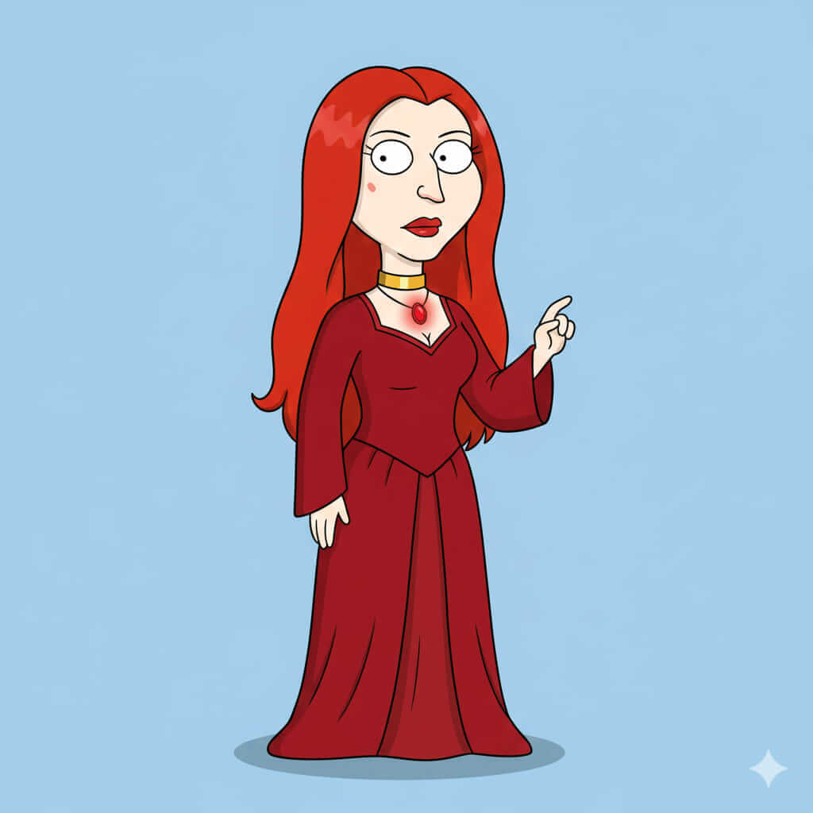

Melyndra Scarlayne
Historia
Melyndra Scarlayne nació en Vol’shyraen, tierra de magia ancestral y secretos oscuros. Desde pequeña demostró un talento excepcional para la hechicería, siendo capaz de controlar tanto la luz como las sombras a voluntad. Su vida estuvo marcada por el estudio de grimorios prohibidos, rituales antiguos y la búsqueda del conocimiento que podría cambiar el destino de Throonia. Su poder la convirtió en una figura temida y respetada, capaz de influir en eventos que incluso los reyes no podían controlar.
A medida que creció, Melyndra se convirtió en una estratega mágica y sacerdotisa de gran influencia, capaz de manipular la política y el destino a través de su hechicería. Su lealtad es compleja: lucha tanto por el bien de su tierra como por sus propios intereses y planes, lo que la hace impredecible y peligrosa. Nadie puede estar seguro de su verdadera intención, pero su presencia siempre marca un antes y un después en la historia de Throonia.
Casa y relaciones
Casa: Vol’shyraen.
Familia: Linaje de sacerdotisas y hechiceros de gran poder.
Aliados: Seguidores leales, magos y clérigos de Vol’shyraen.
Enemigos: Cualquier casa que amenace su territorio o sus planes mágicos, incluidos Targheris y Starfell.
Habilidades y personalidad
Sacerdotisa de la luz - Hechicería - Magia oscura.
Personalidad enigmática, calculadora y poderosa, con ambición y conocimiento sin igual.